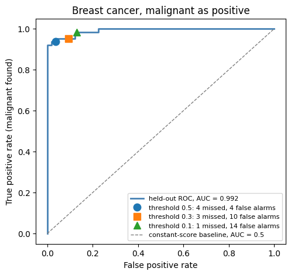

The Activity
Unit 11 · Run 13 November 2026 · Tutor: Dr Elizabeth Oladapo · Evidences learning outcomes 1 and 2
Activity guidance: run the supplied model_Performance_Measurement.ipynb, change different parameters and observe the impact on AUC and R². I wrote down three expectations before my first run, then reran the notebook so that C and alpha were chosen by cross-validation on the training data and each chosen model evaluated once on held-out data; other settings are shown on the same held-out cases for comparison only (Jordan, 2017). Two expectations held and one did not.
Findings
| Step | What I did | Result |
|---|---|---|
| Supplied notebook | Ran every supplied cell in order | Three cells needed a change: a stray space, a solver newer scikit-learn versions no longer accept for three classes, and a cell headed RMSE that returns the MSE (0.375, where the RMSE is 0.612). |
| Where AUC is measured | Breast-cancer data (Wolberg et al., 1993): one fixed, unscaled model fitted on 70% of the cases | 0.993 on its training data and 0.996 on the 30% held out, so my expectation of a lower held-out figure did not hold for that model. A separate, cross-validation-selected model gave its own held-out estimate of 0.992. |
| C and scaling | Five-fold cross-validation on the training cases only, then one final test | C = 1 with scaled features chosen; held-out AUC 0.992, against 0.5 for a baseline giving every case the same score. |
| Thresholds | Malignant as the positive class, thresholds 0.5, 0.3 and 0.1 fixed before the test | Same AUC of 0.992 throughout; cancers missed 4, 3 and 1 of 64, false alarms 4, 10 and 14. |
| Noise features | Iris data (Fisher, 1936) with 0 to 800 random features, five random draws | Mean class-2 AUC fell from 0.995 to 0.847, 0.822 and 0.765, as I expected; the ranges at 40 and 200 overlapped. |
| Ridge alpha and degree | Diabetes data (Efron et al., 2004), alpha chosen by cross-validation | Alpha 0.1 gave a held-out R² of 0.402, against 0.00 for the training mean. At degree 3 (286 columns, rank 275, 309 training cases), training R² was 0.947 and held-out R² −65.9. |

One AUC is not enough. The chosen model, with a held-out AUC of 0.992, missed 4 of 64 cancers at a threshold of 0.5 and 1 at 0.1, while false alarms rose from 4 to 14. In a real pathway, more false alarms could mean patient anxiety and follow-up demand, while a missed case could delay assessment. If such a model were used on patients, a missed cancer and a false alarm would not cost the same (Novaković et al., 2017), and training it on patients’ records would mean processing identifiable patient health data under the UK GDPR, which needs a lawful basis under article 6 and a separate condition under article 9 (Information Commissioner’s Office, 2026). Before sign-off, I would ask that metrics come from data the model did not see, that each sits beside a baseline, that each label means what it says, and that the chosen threshold comes with its counts of missed cases and false alarms.
Evidence
I ran the notebook in Google Colab on the CPU. All three data sets ship with scikit-learn. Its first code cell records the run, and all 28 code cells completed without errors, in order:
Run by Anne Dayer (student 39359) in Google Colab on 13 November 2026 at 12:45 UTCAI Acknowledgement
Codex was used to assist in identifying appropriate code solutions and to proofread and refine the code I produced. Claude and Grammarly supported proofreading, language refinement, and formatting of my written text. All final decisions, analyses, interpretations, conclusions, and recommendations are my own.
References
Efron, B., Hastie, T., Johnstone, I. and Tibshirani, R. (2004) ‘Least angle regression’, The Annals of Statistics, 32(2), pp. 407–499. Available at: https://doi.org/10.1214/009053604000000067.
Fisher, R.A. (1936) ‘The use of multiple measurements in taxonomic problems’, Annals of Eugenics, 7(2), pp. 179–188. Available at: https://doi.org/10.1111/j.1469-1809.1936.tb02137.x.
Information Commissioner’s Office (2026) Special category data. Available at: https://ico.org.uk/for-organisations/uk-gdpr-guidance-and-resources/lawful-basis/a-guide-to-lawful-basis/special-category-data/ (Accessed: 13 November 2026).
Jordan, J. (2017) ‘Evaluating a machine learning model’, Jeremy Jordan, 21 July. Available at: https://www.jeremyjordan.me/evaluating-a-machine-learning-model/ (Accessed: 20 October 2026).
Novaković, J.Dj., Veljović, A., Ilić, S.S., Papić, Ž. and Tomović, M. (2017) ‘Evaluation of classification models in machine learning’, Theory and Applications of Mathematics & Computer Science, 7(1), pp. 39–46.
Wolberg, W., Mangasarian, O., Street, N. and Street, W. (1993) Breast Cancer Wisconsin (Diagnostic) [Dataset]. UCI Machine Learning Repository. Available at: https://doi.org/10.24432/C5DW2B.